These demos exist to help you detect, prevent, and fix ECB misuse. Each attack runs against a self-contained, in-page oracle — there is no network and no third-party system. Every weakness is paired with its mitigation. Do not point these techniques at any system you do not own or are not authorized to test.
The mechanism
A message is split into fixed-size blocks — 16 bytes for AES — and each block is encrypted independently under the same key, with no IV, no nonce, and no dependency on any other block: Cᵢ = E_K(Pᵢ). NIST defines ECB in SP 800-38A and states what follows: inspecting any two ciphertext blocks reveals whether the corresponding plaintext blocks were equal. ECB behaves like a fixed lookup table — a codebook.
The difference from a safe mode is entirely in what feeds each block encryption. ECB feeds it the plaintext block alone, so two equal plaintext blocks take the same path to the same ciphertext. CBC first XORs each block with the previous ciphertext (the first with a random IV); GCM never encrypts the plaintext directly — it encrypts a per-message nonce-plus-counter and XORs the result in, then authenticates.

Why determinism breaks confidentiality
A mode should be indistinguishable under chosen-plaintext attack (IND-CPA): submit two equal-length messages, receive the encryption of one chosen at random, and you should not guess which better than a coin flip. Consider two 2-block messages — one is A×16 ∥ A×16 (identical blocks), the other A×16 ∥ B×16 (distinct). Answer "first" if the two ciphertext blocks are equal. You are right every time, because ECB's determinism makes C₁ = C₂ exactly when P₁ = P₂. Advantage 1 — the maximum. A stronger key does not change this; the break is in the mode.
Two root causes, four vectors
Every vector traces back to one of two root causes and to no third — determinism drives the three confidentiality attacks, the missing integrity drives the one tampering attack.

Vector 1 — Pattern & structure leakage
Identical plaintext regions become identical ciphertext regions. Uniform image backgrounds, repeated record layouts, and fixed protocol headers all survive encryption as visible structure. Encrypt a structured bitmap and its outline persists through ECB — but dissolves under CBC and GCM.
Encrypt an image under each mode
The same bitmap and the same AES-128 key, encrypted three ways. Only ECB preserves the shape.
Block-repetition playground
Vector 2 — Equality & frequency inference
Determinism preserves equality across every row of a dataset encrypted under the same key: two ciphertext blocks are equal iff the plaintext blocks were. That alone lets an attacker cluster records by identical ciphertext with no decryption — the mechanism behind Adobe's 2013 breach, where ~153 million password records were ECB-encrypted (not hashed) without a per-user salt, so identical passwords produced byte-identical ciphertext.
Cluster users by ciphertext — no decryption
Vector 3 — Chosen-plaintext byte-at-a-time recovery
When a service computes ECB(attacker_input ∥ secret) — say, an endpoint that appends a session token to whatever you submit before encrypting — you can recover the secret one byte at a time, from ciphertext alone, in roughly 256 × L queries. Send just enough filler to push one unknown byte into the last slot of a block, capture that block as the target, then try all 256 values in that slot until the ciphertext matches. Shift down one byte and repeat.

Watch the secret fall, one byte at a time
The oracle holds a hidden secret and a random key you never see. Type a secret for it to hide, then run the attack — it only ever sees ciphertext.
Vector 4 — Block malleability / cut-and-paste
With no authentication tag and no chaining, ciphertext blocks are independent, portable units. If you can get chosen plaintext encrypted under the target key — for example by controlling your own account's email field — you can splice a block that decrypts to role=admin onto an otherwise legitimate token, and the server accepts it: no decryption error, no signature to forge. Cryptopals Set 2 Challenge 13.

Forge an admin token with only the public interface
The service issues encrypted role=user tokens and trusts whatever role a token decrypts to. You never see its key.
Detecting ECB
Two independent angles, because the ciphertext-only test cannot see a codebase and the source-only test cannot see a black box.
- Black-box (ciphertext or oracle access): split the ciphertext into fixed-size blocks and look for duplicates — exactly what the block playground above does. Against a live oracle, submit repeated blocks and check whether any two outputs match.
- White-box (source / config review): ECB is frequently a library default, not a choice. Grep for
MODE_ECB,modes.ECB(,/ECB/, or an unqualifiedCipher.getInstance("AES")— which the Java Cryptography Architecture silently resolves toAES/ECB/PKCS5Padding. This last one is the highest-yield single check.
A repeated ciphertext block is sufficient evidence of deterministic, block-independent encryption (ECB is the overwhelmingly likely cause) but not necessary: the passive test misses ECB when the sampled plaintext has no repeated block, which is why the active oracle variant is more reliable.
The fix — authenticated encryption
Use AEAD with a fresh nonce per message: AES-GCM or ChaCha20-Poly1305. The nonce breaks the determinism Vectors 1–3 depend on, and the authentication tag — verified before any plaintext is trusted — closes Vector 4: a tampered or spliced ciphertext fails verification instead of silently decrypting to attacker-chosen content.
The same token under GCM — tamper and watch it fail
Re-issue the token under AES-GCM, flip a single ciphertext bit, and try to read the role back.
If AEAD genuinely is not available, CBC or CTR with a fresh random IV per message plus a separately computed MAC (encrypt-then-MAC, checked before decryption) restores confidentiality and integrity — but it is strictly more to get wrong than using an AEAD mode directly.
Real-world evidence
| Case | What happened | Vector |
|---|---|---|
| Adobe, 2013 | ~153M password records encrypted (not hashed) in ECB with 3DES (inferred from the 8-byte block size), unsalted. Identical passwords → byte-identical ciphertext; researchers clustered accounts and used the leaked hints to confirm the common values within hours. | Vector 2 |
| Zoom, 2020 (CVE-2020-11500) | Every meeting used one AES-128 key in ECB mode for all audio/video, preserving structure — and it was AES-128, not the AES-256 marketed at the time (Citizen Lab). | Vector 1 |
| MS Office 365 Message Encryption, 2022 | OME encrypted message bodies with AES-ECB; repeated/structured content leaked across messages sharing a key. Microsoft declined to ship a fix (WithSecure advisory). | Vector 1 |
| Android apps, 2013 | Of 11,748 Google Play apps using crypto APIs, "do not use ECB" was the single most-violated rule — 7,656 apps, 5,656 of them because the developer specified only AES and the provider defaulted to ECB (Egele et al., ACM CCS 2013). | Vectors 1–4 |
Residual risk after switching to GCM
GCM defeats all four vectors but adds a failure mode of its own: reusing a (key, nonce) pair breaks confidentiality and can allow the tag to be forged. An Internet-wide scan (Böck et al., USENIX WOOT 2016) found 184 HTTPS servers repeating AES-GCM nonces, fully breaking authenticity. A fresh random 96-bit nonce per message is necessary but must be preserved by every caller — it is not automatic just because the mode is GCM.
ECB has exactly two root causes — deterministic block encryption and no integrity — and every attack here follows from one or both. The fix is authenticated encryption with a fresh nonce per message, not a patch to ECB itself.
Primary references
- NIST SP 800-38A — the definition of ECB and the equal-block property.
- filippo.io — Analyzing the Adobe leaked passwords, and Schneier — the Adobe 2013 case.
- Cryptopals, Sets 1 & 2 — detect-ECB, byte-at-a-time recovery, and cut-and-paste.
- Naveed, Kamara & Wright, ACM CCS 2015 — inference attacks on property-preserving encryption.